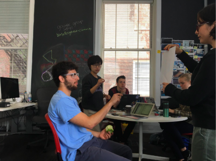

FloCore is an augmented reality application which creates a 3D workspace that molds and flows with you. Whether it be a research paper, a programming assignment or a video project, FloCore allows you to customize your work in your physical space to best optimize your focus – it aims to disrupt the restrictive model of technology and take you outside the limitations of the phone screen, tablet or laptop. FloCore is designed to be a malleable system that allows you to be immersed in your work anywhere and anytime. Through a simple set of interactions, you can manipulate your workspace to mimic your thought process. FloCore saves all your progress in a neat and organized way, allowing you to resume right where you left off without having to re-organize your space. Your work should be efficient, focused and natural as possible, and FloCore is here to help you do just that.
goal :
user :
value :
skills :
teammates :
To transform any environment into a workspace with the newest AR tech
College students
To minimize distraction and maximize productivity
User-Research, User-Testing, Adobe After Effects
Nikola Boskovic, Rebecca Lassiter, Xizi Sun, Audrey Valbuena
how we started
We were tasked with exploring work within the AR space. We were advised to create a technology that could exist ten years into the future, to not worry about technicalities, but to imagine what could be possible – to think magic instead of technology. We decided to explore content generation--how we work when compiling information into one body of work. This system is based off the use case of writing a research paper, as it is a common situation that requires the synthesis of information.
mood board
To study the AR/VR tech, we wanted to ensure that we understood how people used it and how artists imagined it in the movies and videos. Therefore, we first explored movies and works published that were related to AR/VR by creating mood boards to gather and organize ideas.
interviews & observations
We then shifted our focus to workspaces and how to utilize VR/AR tech to manage that space. We explored how people organized their workspace by conducting a series of interviews and observational sessions to understand how and why people organized their current workspaces. One critical finding was that we identified two main categories of people -- Type A and Type B. While Type A had a structured system to organize their work, Type B people had their own way of remembering and organizing things without any solid system. There is, of course, a large portion of individuals who fall between these two extremes. With this finding, we did not want to enforce a standard rule of using our system to manage information space and wanted to leave enough room for customization.
prototyping & user-testing
With the exploration of mood boards and workspaces, we decided to narrow down focus to research related tasks. We selected a research topic “World War II” and gave our users this prompt:
“Imagine you are doing a research paper on World War II in a AR space, you can manipulate anything in any way you want.”
We conducted a series of user tests with our tool kit to let them utilize whatever gestures felt most natural to them to organize and manage information in such a scenario.

features of final design
[interactions]
The gestures used to interact with this system are intuitive, effortless, and intentional (they cannot be mistaken for a different gesture/meaning). Based on research and user testing, these interaction gestures were natural to perform, requiring little thought or exertion. Through a simple onboarding process, we expect users to be able to quickly and easily manipulate the system.
*From top left to bottom right 1. Move screen 2. Bring closer 3. Push away 4. Minimize 5. Increase screen 6. Decrease Screen 7. Zoom-In/Out 8. X-out 9. Screenshot
[menu]
The user will utilize the menu to enter a previously saved workspace or create a new one. The menu consists of a banner surrounding the user, displaying their most recent workspaces. Users can then scroll through or search for workspaces that aren’t currently displayed.
When they open up a previously created workspace, all the content that they have open will be exactly as they left it. This feature was implemented because of people's memory palace – people tend to consistently put certain items in certain places and like to set up in a particular way. Therefore, to help the efficient flow of their work, we wanted to ensure that they didn't have to take the extra step to reorganize their surroundings.
[save]
We let our users search between and within workspaces. This was done by creating a “universal” search bar implemented on the menu wheel. They just have to type a keyword of the title in the search bar for the document to pop up. In addition, the system will automatically save the work with a tag specific to the workspace the user is working in.
For example, if the user is working on a research paper in the “Physics” workspace, the document would have a “Physics” tag. Therefore, even if the user didn’t know which title to search because they forgot what they named the document, they just have to go to the section of “Physics” and quickly skim through. This system gives the user the flexibility to organize according to their own needs.